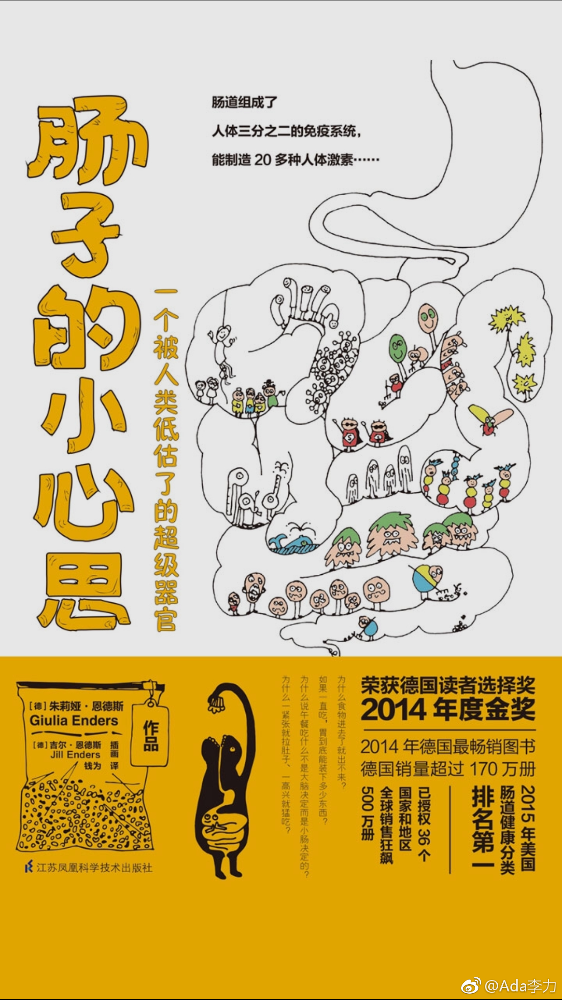

#读书#一直听说最新研究发现肠道是人类的第二大脑，所以看到《肠子的小心思》这本书马上就想翻翻。
是一本写得非常有趣的科普书，译者水平也很高，猜想是个90后。
海鞘不再走动后，就把自己脑子吃掉那一节让我乐不可支。
以前知道弓形虫对孕妇有危险，这本书里提到的弓形虫感染另一作用很好玩，会让老鼠不再怕猫，而是主动地迎猫而上。猫作为宠物却成为家里主子，这名号真不是白得来的。
另外肠道细菌能改变老鼠性格这事儿，确实有巨大想象空间。肠道细菌跟肥胖，过敏症，抑郁症，老年痴呆症也息息相关，虽然相关程度目前无法精确度量，可看完了这本书，还是会加深这种印象，要想活得长，活得健康，就得吃健康饮食。
这本书据说在德国热卖，大家对跟自己相关的知识，还是很有热情去了解的。科普还是在于怎么去表述。
可以好好学学这本书的写作手法。
是一本写得非常有趣的科普书，译者水平也很高，猜想是个90后。
海鞘不再走动后，就把自己脑子吃掉那一节让我乐不可支。
以前知道弓形虫对孕妇有危险，这本书里提到的弓形虫感染另一作用很好玩，会让老鼠不再怕猫，而是主动地迎猫而上。猫作为宠物却成为家里主子，这名号真不是白得来的。
另外肠道细菌能改变老鼠性格这事儿，确实有巨大想象空间。肠道细菌跟肥胖，过敏症，抑郁症，老年痴呆症也息息相关，虽然相关程度目前无法精确度量，可看完了这本书，还是会加深这种印象，要想活得长，活得健康，就得吃健康饮食。
这本书据说在德国热卖，大家对跟自己相关的知识，还是很有热情去了解的。科普还是在于怎么去表述。
可以好好学学这本书的写作手法。
- 